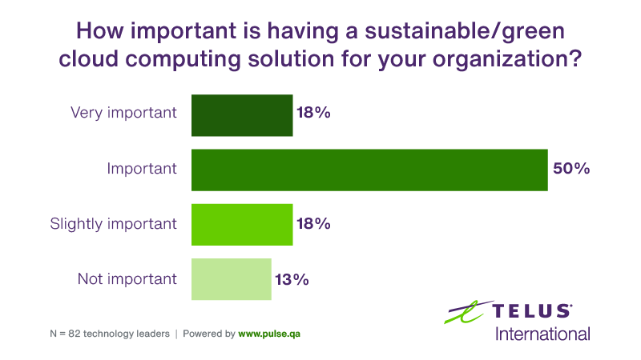

Conclusions
Our conclusions come in the form of two main points. Switching from physical IT infrastructure to
greener methods of cloud computing is the both the moral thing to do in the times where a reduction
in carbon emissions is vital for the future of both the planet's and humanities's survival, and the
economical thing to do as effiency in resource provisioning would lead to cut costs and workloads in
turn leading to increased profits.

Migrating to sustainable green cloud computing by using optimization tools, carbon-aware cloud service
providers, and virtualization would lead to net-zero practices that would minimize environmental damage
ensuring better future for both the company and the world.
For each impact, we assign a score out of five that illustrates how sustainable green cloud computing
is. We also rank them in order of most critical to least critcal. The results are as follows:
- In a environmental aspect, green cloud computing scores a 4 out of 5 as well as the title
of the most crictical reason to implement. While the potential reduction in carbon emissions
is grand, it is still something that would consume a large amount of energy and expecting no
environmental impact is not realistic.
- In the economical aspect, green cloud computing scores a 3 out of 5 with it being in between
the other two pillars of sustainability in terms of criticalness. The potential increase in
profits gained by switching to green cloud computing while impressive, doesn't take into account
the cost of migrating the infrastructure of the organization to new methods of storage and computation.
- In the social aspect, green cloud computing scores a 4 out of 5 with it being the least critical,
but still important, reason to implement. The reason for the social pillar being ranked least critical
is mainly because of the fact that the two other pillars would likely benefit society in an indirect way
more than the direct social change green cloud computing would bring.